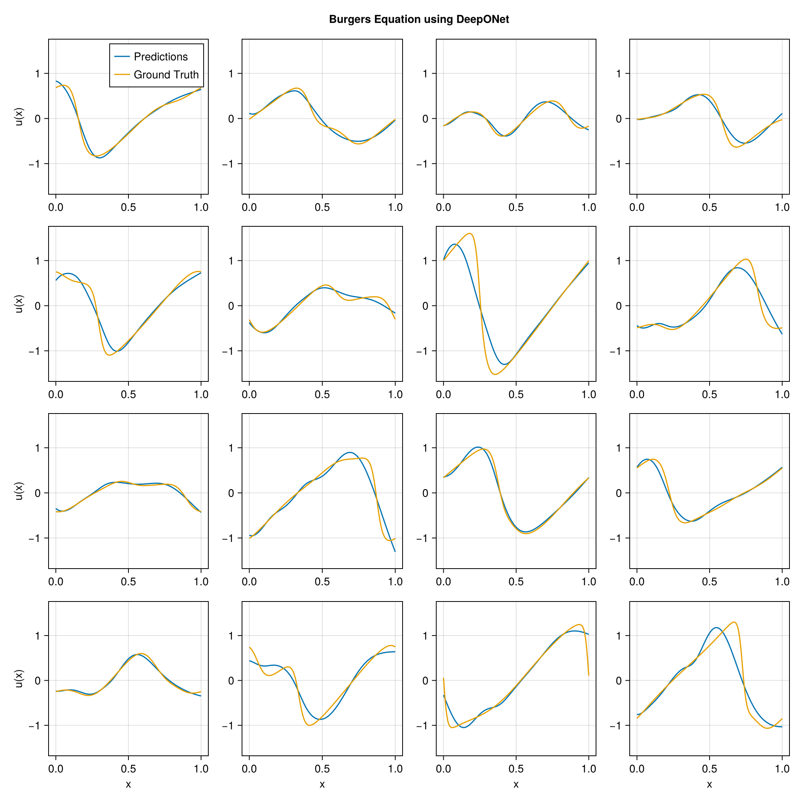

using DataDeps, MAT, MLUtils
using PythonCall, CondaPkg # For `gdown`
using Printf
const gdown = pyimport("gdown")
register(
DataDep(
"Burgers",
"""
Burgers' equation dataset from
[fourier_neural_operator](https://github.com/zongyi-li/fourier_neural_operator)
mapping between initial conditions to the solutions at the last point of time \
evolution in some function space.
u(x,0) -> u(x, time_end):
* `a`: initial conditions u(x,0)
* `u`: solutions u(x,t_end)
""",
"https://drive.google.com/uc?id=16a8od4vidbiNR3WtaBPCSZ0T3moxjhYe",
"9cbbe5070556c777b1ba3bacd49da5c36ea8ed138ba51b6ee76a24b971066ecd";
fetch_method=(url, local_dir) -> begin
pyconvert(String, gdown.download(url, joinpath(local_dir, "Burgers_R10.zip")))
end,
post_fetch_method=unpack
)
)
filepath = joinpath(datadep"Burgers", "burgers_data_R10.mat")
const N = 2048
const Δsamples = 2^3
const grid_size = div(2^13, Δsamples)
const T = Float32
file = matopen(filepath)
x_data = reshape(T.(collect(read(file, "a")[1:N, 1:Δsamples:end])), N, :, 1)
y_data = reshape(T.(collect(read(file, "u")[1:N, 1:Δsamples:end])), N, :, 1)
close(file)
x_data = permutedims(x_data, (2, 1, 3))
grid = reshape(T.(collect(range(0, 1; length=grid_size)')), :, grid_size, 1)
1×1024×1 Array{Float32, 3}:
[:, :, 1] =
0.0 0.000977517 0.00195503 … 0.997067 0.998045 0.999022 1.0
using Lux, NeuralOperators, Optimisers, Zygote, Random
using LuxCUDA
const cdev = cpu_device()
const gdev = gpu_device()
deeponet = DeepONet(;
branch=(size(x_data, 1), ntuple(Returns(32), 5)...),
trunk=(size(grid, 1), ntuple(Returns(32), 5)...),
branch_activation=tanh,
trunk_activation=tanh
)
ps, st = Lux.setup(Random.default_rng(), deeponet) |> gdev;
((branch = (layer_1 = (weight = Float32[-0.08019774 0.011221741 … 0.038949486 -0.044107914; 0.056905374 0.007371793 … 0.02320906 -0.086922556; … ; 0.06454319 -0.031872816 … 0.035962105 -0.05909328; -0.0640743 0.08227873 … -0.08751811 -0.02592969], bias = Float32[-0.0014408678, 0.015191358, -0.011178356, -0.0040147714, 0.00692093, -0.011270598, -0.005741451, 0.019428685, -0.014959972, -0.008930109 … 0.02245843, 0.028530188, -0.029045235, 0.0033158548, 0.018531643, 0.01633346, -0.026592411, -0.0017144717, -0.008052234, 0.020984095]), layer_2 = (weight = Float32[-0.41696963 -0.2391932 … -0.10137942 -0.28150135; 0.30332983 -0.13148938 … -0.31495267 -0.043661103; … ; -0.31103352 0.30056015 … 0.31494513 -0.5008607; -0.31640702 -0.0384527 … 0.34927708 0.3925596], bias = Float32[-0.12998286, -0.06672613, -0.1159609, 0.08702553, 0.0641109, 0.05976187, 0.11856359, -0.070783295, -0.098457, 0.15431759 … 0.026056299, 0.12692818, -0.13057362, -0.057691198, 0.018685931, 0.024160301, 0.07293656, 0.115486115, -0.07653134, 0.1324324]), layer_3 = (weight = Float32[-0.22313279 0.1403486 … 0.1645471 -0.42380416; 0.14728394 -0.1715723 … -0.12074213 -0.15219742; … ; -0.10856145 -0.095034584 … -0.18678749 -0.15735248; 0.22930248 0.3770467 … 0.15714662 0.048516486], bias = Float32[0.11610247, -0.005450009, 0.049692336, 0.05410079, -0.14238733, 0.06106069, -0.08706354, -0.001186223, 0.04735835, -0.018491339 … -0.10420802, 0.040003598, 0.1057703, 0.019210365, -0.12344723, 0.12809072, 0.07434015, -0.08818339, -0.0629581, -0.016479861]), layer_4 = (weight = Float32[0.24330434 -0.26980358 … -0.14627191 -0.17200665; -0.03305766 -0.0340619 … 0.2761852 -0.3189521; … ; -0.18295702 -0.42882234 … -0.2979559 -0.106002055; -0.4573285 0.1335739 … 0.26650298 -0.49745193], bias = Float32[-0.09818681, -0.103987, -0.11780147, -0.15399154, 0.16233645, 0.1515453, -0.05382652, 0.138688, -0.039995715, -0.13447447 … -0.15790945, 0.16594571, 0.15217899, -0.026423924, 0.13821074, -0.15454249, -0.044485766, 0.09006137, 0.09417412, -0.16340095]), layer_5 = (weight = Float32[0.24993078 0.026098002 … -0.29929352 0.22745419; 0.09629644 0.26051173 … -0.18358436 0.20290747; … ; -0.21505162 -0.0037543054 … 0.026044859 0.01864177; 0.1171003 0.24250163 … 0.028699119 0.11548166], bias = Float32[0.0353772, -0.08294447, 0.13621828, 0.11265684, 0.1459726, -0.013824566, 0.096894406, -0.104362465, 0.1104297, -0.0751755 … -0.11451686, -0.007588456, 0.014541421, -0.16193277, -0.0061777798, 0.03300591, -0.08318182, 0.10812824, 0.07671907, 0.11156252])), trunk = (layer_1 = (weight = Float32[-2.572857; 2.6521401; … ; -0.5050781; 2.417804;;], bias = Float32[-0.97354925, 0.31411016, 0.3854996, 0.8166009, 0.98943853, -0.3085035, -0.55779874, -0.6477376, 0.8462858, 0.5230516 … 0.76373565, 0.05051446, 0.014144778, 0.059370995, -0.25333035, -0.15916443, -0.88180506, 0.5138856, 0.93099797, -0.9430307]), layer_2 = (weight = Float32[-0.42343947 0.0758051 … 0.36834484 0.18045336; -0.30737177 -0.1307514 … 0.41172436 -0.46660528; … ; -0.005675179 -0.2915748 … -0.24432209 0.33217514; 0.2062788 0.19398004 … 0.085825875 0.17878012], bias = Float32[-0.11739147, 0.11059555, -0.1425201, 0.04520652, 0.06465717, -0.008195412, -0.09741401, 0.079898305, 0.13232277, -0.07166469 … 0.16121888, 0.040282756, 0.14548536, -0.16691193, -0.06573256, 0.019553293, -0.12471358, -0.16537085, -0.16601245, -0.13343625]), layer_3 = (weight = Float32[0.0073856413 0.102529295 … 0.32718584 -0.010979455; 0.40245378 -0.3791379 … -0.16060136 -0.05310499; … ; 0.47919074 -0.048948526 … -0.3929825 0.12916444; -0.30821115 -0.16547798 … -0.20427749 -0.11534459], bias = Float32[-0.13209288, -0.08196945, -0.03754732, -0.07483618, 0.09628131, -0.12032837, 0.06780924, -0.07299474, 0.102787204, -0.05616409 … -0.11999903, -0.059803005, -0.089117214, -0.14800161, -0.09123553, -0.036414687, -0.06316504, -0.0030126988, -0.055128522, -0.08584529]), layer_4 = (weight = Float32[-0.26358423 -0.45528033 … -0.36550635 -0.07308042; 0.4486985 0.33777985 … 0.5046895 0.28449085; … ; 0.33716282 -0.28987402 … -0.021617206 0.17410463; 0.36254436 0.21031171 … -0.18852691 -0.39716008], bias = Float32[0.17236128, 0.13742429, 0.08528368, -0.058529876, -0.010725635, -0.10177366, -0.052062444, -0.14571932, -0.16143838, -0.051243868 … 0.089849435, -0.06953265, 0.15547867, 0.045091838, 0.029061537, 0.14408964, -0.10783777, -0.16638847, 0.0018969243, -0.14150055]), layer_5 = (weight = Float32[-0.15042353 -0.2996413 … -0.30369794 -0.25188363; 0.1608346 -0.06788132 … -0.09260674 -0.036899775; … ; -0.2636709 -0.30196708 … 0.07301826 -0.07005711; -0.22940005 -0.29713172 … -0.036463194 0.21851195], bias = Float32[-0.13357173, 0.06373497, 0.049154267, -0.0972528, -0.012859531, 0.078981616, -0.088846356, -0.0347969, 0.16715197, -0.15253934 … -0.100317806, -0.11052725, 0.028470913, -0.15508316, 0.15848677, -0.06792517, 0.07201282, 0.12684783, 0.04242854, 0.041741144])), additional = NamedTuple()), (branch = (layer_1 = NamedTuple(), layer_2 = NamedTuple(), layer_3 = NamedTuple(), layer_4 = NamedTuple(), layer_5 = NamedTuple()), trunk = (layer_1 = NamedTuple(), layer_2 = NamedTuple(), layer_3 = NamedTuple(), layer_4 = NamedTuple(), layer_5 = NamedTuple()), additional = NamedTuple()))
x_data_dev = x_data |> gdev
y_data_dev = y_data |> gdev
grid_dev = grid |> gdev
function loss_function(model, ps, st, ((v, y), u))
û, stₙ = model((v, y), ps, st)
return MAELoss()(û, u), stₙ, (;)
end
function train_model!(model, ps, st, data; epochs=5000)
train_state = Training.TrainState(model, ps, st, Adam(0.0001f0))
for epoch in 1:epochs
_, loss, _, train_state = Training.single_train_step!(
AutoZygote(), loss_function, data, train_state)
if epoch % 25 == 1 || epoch == epochs
@printf("Epoch %d: loss = %.6e\n", epoch, loss)
end
end
return train_state.parameters, train_state.states
end
ps_trained, st_trained = train_model!(
deeponet, ps, st, ((x_data_dev, grid_dev), y_data_dev))
((branch = (layer_1 = (weight = Float32[-0.0831006 0.007994559 … 0.036592476 -0.046720184; 0.049472086 0.000113900955 … 0.015382172 -0.09454596; … ; 0.06458393 -0.03130813 … 0.03499139 -0.059565034; -0.05708681 0.08915665 … -0.08045262 -0.018879775], bias = Float32[0.06726366, 0.03372538, -0.016656177, -0.112711795, -0.020524256, 0.10131397, 0.1370299, 0.14631511, -0.038657535, 0.0028601508 … 0.15211703, 0.08186907, -0.024711972, 0.06568425, -0.0380188, 0.003253039, -0.052358173, 0.050229196, 0.021898078, 0.14455965]), layer_2 = (weight = Float32[-0.3921117 -0.24846207 … -0.087267265 -0.25696674; 0.29704845 -0.094297774 … -0.3105908 -0.0640777; … ; -0.30769908 0.27802303 … 0.29415083 -0.4660775; -0.31928378 -0.024717944 … 0.35306257 0.38689667], bias = Float32[-0.27165014, -0.11632138, -0.1259813, 0.07653525, 0.07064158, 0.048839036, 0.12873742, -0.05379967, -0.08792895, 0.24572974 … 0.055542577, 0.17258003, -0.1403624, -0.044357788, -0.0017023344, -0.035271205, 0.1238705, 0.15576923, -0.14950123, 0.21820411]), layer_3 = (weight = Float32[-0.26982862 0.17663486 … 0.1469586 -0.4483166; 0.1459571 -0.16069816 … -0.120779775 -0.14784312; … ; -0.10689946 -0.12452809 … -0.18317786 -0.16435513; 0.26502755 0.3638027 … 0.18846732 0.057652563], bias = Float32[0.15791066, 0.0035939685, 0.039017104, 0.06344953, -0.2157136, 0.12014798, -0.061600275, -0.08435991, 0.091812946, 0.052562837 … -0.101778455, 0.15092888, 0.08560627, 0.014444811, -0.18882544, 0.16878171, 0.082062185, -0.10154993, -0.046804227, -0.017432991]), layer_4 = (weight = Float32[0.25009802 -0.22453675 … -0.178274 -0.17624141; -0.0106572695 -0.041702196 … 0.25682262 -0.3083915; … ; -0.19741422 -0.42107958 … -0.28940958 -0.08209872; -0.46678635 0.17647922 … 0.25381917 -0.51200444], bias = Float32[-0.12163345, -0.08790397, -0.12511198, -0.20165417, 0.10420109, 0.19203827, -0.04807597, 0.18749397, -0.052599154, -0.13894068 … -0.16339685, 0.14158873, 0.27245423, -0.02828688, 0.13942398, -0.058281347, -0.039883453, 0.12535682, 0.07877867, -0.1470038]), layer_5 = (weight = Float32[0.2325853 0.03534966 … -0.30145413 0.25067404; 0.14363497 0.25125316 … -0.16789123 0.19758867; … ; -0.22322157 0.041418873 … 0.093140505 0.049640547; 0.15311667 0.2911775 … 0.09102835 0.0907727], bias = Float32[0.03479206, -0.0809634, 0.17363103, 0.11366193, 0.13736896, -0.016100181, 0.097007446, -0.09992804, 0.107185796, -0.0757286 … -0.12864721, -0.005385307, 0.012106071, -0.1623416, -0.0045573344, 0.02861867, -0.08980559, 0.09974898, 0.07646464, 0.101708755])), trunk = (layer_1 = (weight = Float32[-2.5560215; 2.6073744; … ; -0.5183601; 2.3055155;;], bias = Float32[-0.98170936, 0.19916396, 0.38694274, 0.8498368, 0.99508625, -0.28038907, -0.5863539, -0.78488606, 0.8928472, 0.53505665 … 0.7606239, 0.039612737, -0.0056540384, 0.077381365, -0.28827795, -0.091999896, -0.88027984, 0.53833556, 0.9395362, -1.0989369]), layer_2 = (weight = Float32[-0.4209314 0.07641096 … 0.36118522 0.21114735; -0.30797297 -0.13795266 … 0.4155908 -0.47548875; … ; 0.04109138 -0.29131913 … -0.30508307 0.40758768; 0.2061599 0.2025932 … 0.0811715 0.20418209], bias = Float32[-0.12048691, 0.11269774, -0.14226626, 0.018721523, 0.073254526, -0.0010726997, -0.089896366, 0.092516236, 0.13350576, -0.05336927 … 0.14627355, 0.0698302, 0.14423068, -0.16967188, -0.06063811, 0.017298706, -0.1464213, -0.1492604, -0.22307079, -0.13633032]), layer_3 = (weight = Float32[0.030348374 0.07089436 … 0.30056497 0.01663844; 0.39918575 -0.39092833 … -0.17509966 -0.04211707; … ; 0.49600723 -0.06170002 … -0.39293262 0.15210517; -0.31754333 -0.15256499 … -0.19004554 -0.13206625], bias = Float32[-0.10650818, -0.066937305, -0.032735277, -0.059577238, 0.10138559, -0.114880525, 0.082761325, -0.05043959, 0.112956636, -0.047634408 … -0.11791086, -0.06510636, -0.08514559, -0.14280276, -0.0972365, -0.031345926, -0.05390862, -0.0029386184, -0.056050338, -0.10040681]), layer_4 = (weight = Float32[-0.27882344 -0.50560683 … -0.35044247 -0.061363757; 0.46499413 0.34044078 … 0.49255186 0.26735795; … ; 0.31687954 -0.26979455 … 0.0043479702 0.19788028; 0.36223444 0.21471936 … -0.19077872 -0.3970776], bias = Float32[0.18128434, 0.11966064, 0.07857246, -0.06250714, -0.009581221, -0.11373706, -0.06303479, -0.13415042, -0.14778091, -0.051326632 … 0.08920114, -0.08814215, 0.16064446, 0.054689813, 0.030929651, 0.1608551, -0.037013967, -0.18659051, 0.024333237, -0.13976371]), layer_5 = (weight = Float32[-0.14593734 -0.29980445 … -0.29940948 -0.21384849; 0.19612959 -0.058630552 … -0.09913785 -0.07516123; … ; -0.19845912 -0.33362246 … 0.09366106 -0.034901015; -0.22142182 -0.2926191 … -0.030866489 0.19974534], bias = Float32[-0.13248748, 0.06391035, 0.030786958, -0.08434079, -0.026944809, 0.07415525, -0.10842244, -0.034018107, 0.1660111, -0.14446402 … -0.071688466, -0.084560625, 0.026865248, -0.17916122, 0.13241938, -0.06956229, 0.07037892, 0.12759055, 0.022210322, 0.04746172])), additional = NamedTuple()), (branch = (layer_1 = NamedTuple(), layer_2 = NamedTuple(), layer_3 = NamedTuple(), layer_4 = NamedTuple(), layer_5 = NamedTuple()), trunk = (layer_1 = NamedTuple(), layer_2 = NamedTuple(), layer_3 = NamedTuple(), layer_4 = NamedTuple(), layer_5 = NamedTuple())))
using CairoMakie
pred = first(deeponet((x_data_dev, grid_dev), ps_trained, st_trained)) |> cdev
begin
fig = Figure(; size=(1024, 1024))
axs = [Axis(fig[i, j]) for i in 1:4, j in 1:4]
for i in 1:4, j in 1:4
idx = i + (j - 1) * 4
ax = axs[i, j]
l1 = lines!(ax, vec(grid), pred[idx, :, 1])
l2 = lines!(ax, vec(grid), y_data[idx, :, 1])
i == 4 && (ax.xlabel = "x")
j == 1 && (ax.ylabel = "u(x)")
if i == 1 && j == 1
axislegend(ax, [l1, l2], ["Predictions", "Ground Truth"])
end
end
linkaxes!(axs...)
fig[0, :] = Label(fig, "Burgers Equation using DeepONet"; tellwidth=false, font=:bold)
fig
end
